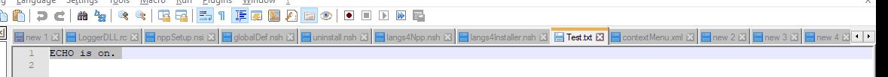
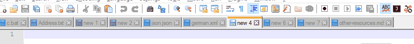
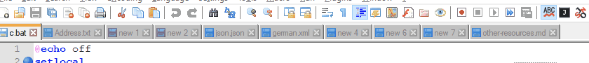
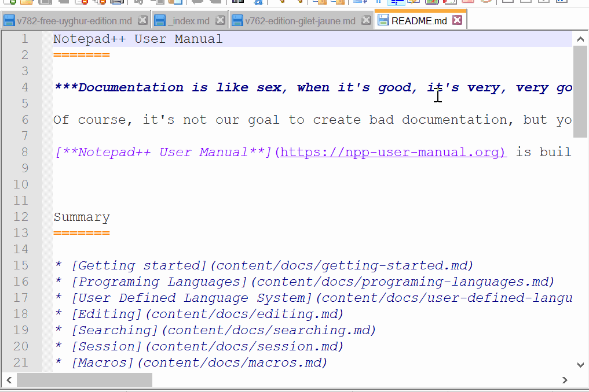
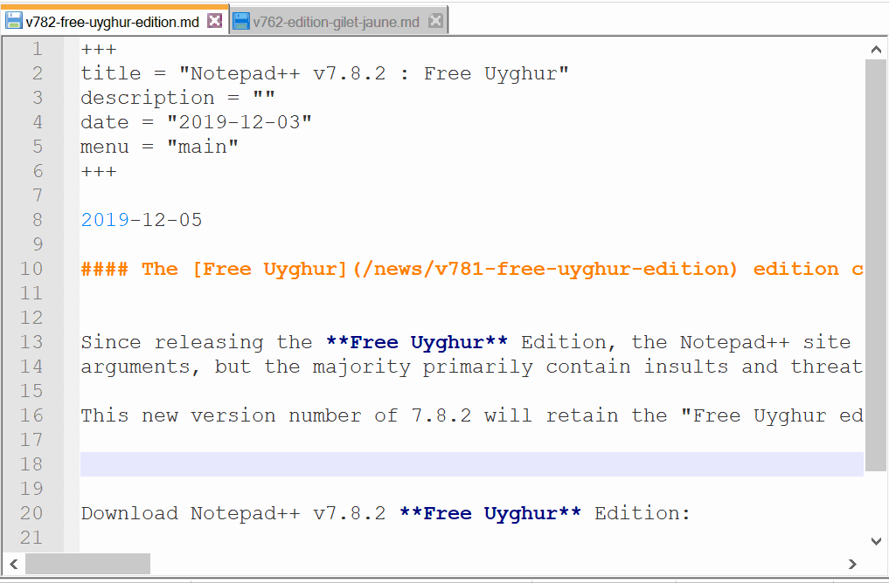
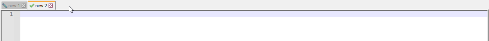
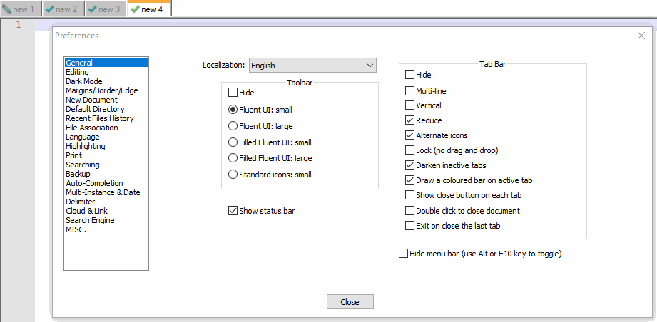

Notepad Replacement
Notepad is a default text editor shipped with Windows. You may want to use Notepad++ instead of Notepad. However, there’s no obvious way to do it: You can run commands to edit the registry following command to make Notepad++ replace Notepad (run in cmd.exe with Administrator privileges)†.
For Windows 7 - Windows 10, use the following command:
reg add "HKLM\Software\Microsoft\Windows NT\CurrentVersion\Image File Execution Options\notepad.exe" /v "Debugger" /t REG_SZ /d "\"%ProgramFiles%\Notepad++\notepad++.exe\" -notepadStyleCmdline -z" /f
Note that you may need to use %ProgramFiles(x86)%\Notepad++\ to substitute for %ProgramFiles%\Notepad++\ if you have Notepad++ 32-bit installed, or use other path if your Notepad++ is installed in a non-default location.
For Windows 11 onward: first uninstall Notepad (just right-click on the Notepad shortcut in Start Menu and select Uninstall), and then run the commands below:
reg add "HKLM\Software\Microsoft\Windows NT\CurrentVersion\Image File Execution Options\notepad.exe\0" /v Debugger /t REG_SZ /d "\"%ProgramFiles%\Notepad++\notepad++.exe\" -notepadStyleCmdline -z" /f
reg add "HKLM\Software\Microsoft\Windows NT\CurrentVersion\Image File Execution Options\notepad.exe\1" /v Debugger /t REG_SZ /d "\"%ProgramFiles%\Notepad++\notepad++.exe\" -notepadStyleCmdline -z" /f
reg add "HKLM\Software\Microsoft\Windows NT\CurrentVersion\Image File Execution Options\notepad.exe\2" /v Debugger /t REG_SZ /d "\"%ProgramFiles%\Notepad++\notepad++.exe\" -notepadStyleCmdline -z" /f
reg delete HKCR\Applications\notepad.exe /v NoOpenWith /f
Note: Windows 11 introduced UWP version of Notepad that use the same technique as described (but with undocumented UseFilter) to replace the built-in Notepad. As UWP apps are started differently than regular apps, they cannot be replaced the same way and UWP Notepad must be uninstalled. Otherwise it would start when opening text files or when run from Start Menu. What`s more, to be able to again use built-in Notepad (now redirected to Notepad++) to open text files the NoOpenWith registry value must be removed (based on How to Restore Old Classic Notepad in Windows 11).
Undo the replacement
For Windows 7 - Windows 10, use the the following command to undo the replacement:
reg delete "HKLM\Software\Microsoft\Windows NT\CurrentVersion\Image File Execution Options\notepad.exe" /v Debugger /f
For Windows 11 onward: reinstall Notepad (launch Microsoft Store via Start Menu, search “Windows Notepad”, select it and then click on Install button) and then run the commands below:
reg delete "HKLM\Software\Microsoft\Windows NT\CurrentVersion\Image File Execution Options\notepad.exe\0" /v Debugger /f
reg delete "HKLM\Software\Microsoft\Windows NT\CurrentVersion\Image File Execution Options\notepad.exe\1" /v Debugger /f
reg delete "HKLM\Software\Microsoft\Windows NT\CurrentVersion\Image File Execution Options\notepad.exe\2" /v Debugger /f
reg add HKCR\Applications\notepad.exe /v NoOpenWith /t REG_SZ /f
Registry Edit Warning
† Warning: editing your registry can be dangerous; edit your registry at your own risk; the developers of Notepad++ and contributors to this documentation cannot and will not be held responsible for mistakes made during registry changes or unintendended consequences of such edits
Explorer Right-Click menu
This section has moved to the “Alternatives” section of the Shell Extension (Right Click Context Entry) page of the User Manual.
Restartable App
Windows 10 and Windows 11 have a “restartable apps” feature (Windows Start Button > Settings > Accounts > Sign In Options > Restart Apps) which automatically saves the state of various “restartable apps” when you log out of Windows then back in. Starting with v8.5.8, Notepad++ is now a “restartable app” – so if you log out or reboot with Notepad++ running, and have that Windows setting active, then when you next log in, Notepad++ will reload right where you were. If you would like to disable Notepad++ from being restartable, add an empty config file called noRestartAutomatically.xml into %APPDATA%\Notepad++\ (for normal installations) or the Notepad++ installation directory (for other configuration settings).
Notepad++ Cheat sheet
Tabs
The tab bar settings can be found at Settings > Preferences > General > Tab Bar, including the option to Hide the tab bar.
To switch between first and last tab, use Ctrl + Shift +
MOUSEWHEELon tabs.MOUSEWHEELup will take to first tab while down will take to last tab. To switch and activate next/previous tab, there are multiple options:
- Use Ctrl +
MOUSEWHEELon tabs.MOUSEWHEELup will take to previous tab while down will take next tab. - Use Ctrl + Page Up for next tab and Ctrl + Page Down for previous tab.
- Use Ctrl + Tab for next tab and Ctrl + Shift + Tab for previous tab. Using use Ctrl + Tab or Ctrl + Shift + Tab while MRU is enabled provides great user experience. To enable MRU you can follow
Settings->Preferences->MISC.->Document Switcher, then checkmark bothEnableandEnable MRU Behavior. 
- Use Ctrl +
To move tab from one position to other position:
- Use Shift +
MOUSEWHEELon tabs.MOUSEWHEELup will move currently selected tab to previous position while down will move to next position. - Use Ctrl + Shift + Page Up for previous position and Ctrl + Shift + Page Down for next position. 
- Use Shift +
To move a tab from one View to the other, you can use the techniques described in the Editing > Dual View section or Views > Move / Clone section, including:
- Use the menus: View > Move/Clone Current Document > Move to Other View.
- Right Click on the tab’s title and select Move to Other View.
- Drag the tab’s title into the editing pane for that same tab and select Move to Other View.
- If the other View is already visible, drag the tab’s title into the editing pane of the other View, and it will move. 
To clone a tab from one View into the other, you can use the techniques described in the Editing > Clone Document or Views > Move / Clone section section, including:
- Use the menus: View > Move/Clone Current Document > Clone to Other View.
- Right Click on the tab’s title and select Clone to Other View.
- Drag the tab’s title into the editing pane for that same tab and select Clone to Other View. 
To create a new file tab using the tab bar:
- If there is empty area to the right of the last tab in the tab bar, double click there and a new tab will be created. 
To close a tab using the tab bar:
- If Settings > Preferences > General > Tab Bar > Show close button on each tab is checked, you can click the red ☒ on that tab to close that tab.
- If Settings > Preferences > General > Tab Bar > Double click to close document is checked, you can double-click the tab’s title to close that tab. 
Tab Bar Right Click Menu
When you right click on the title for a tab, you get a context menu for manipulating that tab.
Close: Closes this file’s tab.Close Mutiple Tabs >:Close All But This: Closes all files except this file.Close All to the Left: Closes all files that are to the right of this file on the tab bar.Close All to the Right: Closes all files that are to the left of this file on the tab bar.Close All Unchanged: Closes all files that do not have unsaved changes (leaves only files that have unsaved changes).
Save: Saves the file (disabled/greyed out if there are no unsaved changes).Save As: Allows you to save the current file under a new name.Open Into >:Open Containing Folder in Explorer: Opens this file’s folder in the Windows Explorer.Open Containing Folder in cmd: Opens this file’s folder in thecmdcommand prompt.Open Containing Folder as Workspace: Opens this file’s folder as a Folder as Workspace.Open in Default Viewer: Opens this file in the default Windows, using the same rules as the File > Open in Default Viewer menu action.
Rename: Renames this file.Move to Recyle Bin: Deletes the current file (placing it safely in Window’s Recycle Bin).Reload: Reloads this file from disk.Print: Prints this file.Read-Only: Sets this file’s Notepad++-specific read-only flag (see more in the Edit menu description).Clear Read-Only Flag: Clears this file’s read-only flag for the Windows OS (see more in the Edit menu description).Copy to Clipboard >Copy Full File Path: Copies the full file path (drive, directory, and filename) to the Windows Clipboard.Copy Filename: Copies just the filename (no drive or directory) to the Windows Clipboard.Copy Current Dir. Path: Copies the file’s directory (drive and directory, but not the filename) to the Windows Clipboard.
Move Document >Move to Other View: Moves the tab from one view to the other.Clone to Other View: Makes a tab for the same file in the other view.Move to New Instance: Moves the tab from this Notepad++ instance to a newly-created instance (only works on named files that have no unsaved changes).Open in New Instance: Makes a tab in a new Notepad++ instance which contains the same file as this tab (only works on named files that have no unsaved changes).
Apply Color to Tab >(new to v8.4.6)Apply Color #: Applies the indicated color to the highlight portion of the tab bar. (Applying a different color will change the color, not combine the colors together. Each tab can only have one color.)Remove Color: Removes the color of the tab, returning to the default color scheme.
Menu Bar
The menu bar of Notepad++ has a variety of menus, including File (for generic file operations like open and close), Edit, Search, and View, Encoding (which affects how the bytes of the file are interpreted as text – whether ANSI or UTF-8 or similar), Language (for syntax highlighting), Settings, Tools (with a couple of built-in utilities), Macro, Run (for running external commands), Plugins, and the Window menu (for accessing open files already open in Notepad++).
It also contains the ? menu, which is a Help-style menu, including actions that list the command line arguments; actions that take you to the Notepad++ home page, the project page, this user manual, and the Community Forum; actions for the updater and proxy; the Debug Info (which is critical information when asking for help at the Community Forum or when creating a feature request or bug report at the project page) and About.
At the far right of the menu bar there are also icons + (to create a New file), ▼ (to choose from the open files), and X (which closes the active tab). (Before v8.4.3, only the X existed in that area of the menu bar. Starting in v8.4.5, these can be made hidden using Settings > Preferences > General > Menu.)
Toolbar
There is a toolbar which has icons for various common tasks. The toolbar settings can be found at Settings > Preferences > General > Toolbar, including the option to Hide the toolbar. If you do not understand the icon, hovering over that icon will show the underlying action.
Tools Menu
This menu contains commands related to running cryptographic hash functions , including MD5, SHA-1, and the SHA-256 and SHA-512 algorithms from SHA-2. (SHA-1 and SHA-512 were added in v8.5.5.) These are useful for comparing the hashes for downloaded files to offically-published hashes, and for generating those hashes for files that you are publishing.
For each function, there are 3 commands:
- Generate - You can enter text in the upper field, and it will give you the hash output in the other field. You can copy those results to the Clipboard through the button. You can optionally checkmark ☑ Treat each line as a separate string to get N different hashes for N different strings at the same time, rather than a single hash that covers the entire input text.
- Generate from Files - Will calculate the hashes for one or more selected files.
- Generate from Selection into Clipboard - Will use the text that is currently selected, calculate the hash, and put the hash results in the Clipboard.